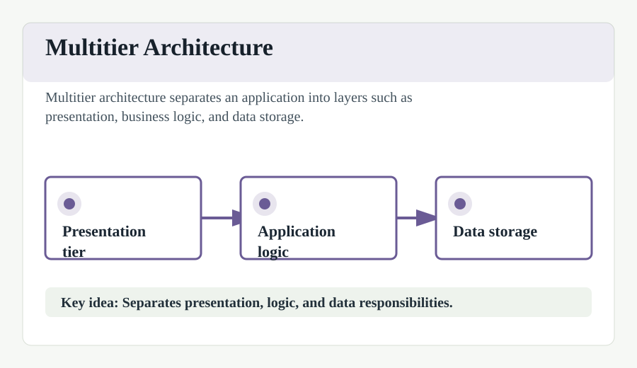

Multitier architecture
In software engineering, multi-tier architecture (often referred to as n-tier architecture) is a client-server architecture in which presentation, application processing, and data management functions are physically separated.
The most widespread use of multi-tier architecture is the three-tier architecture, consisting of a presentation tier (UI), a logic tier (application processing), and a data tier (database). This separation provides developers with the flexibility to update or replace a specific tier without affecting the others.
